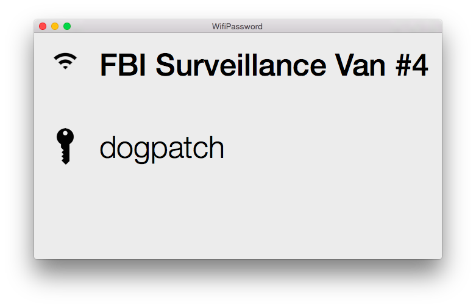

X-Ray
I've been in many situations where a friend wanted to know my wifi password. I used to have to fish into my keychain access and go searching for the key. So I built something that was beautiful, functional, and that did one thing: show you the password of the wifi network you're currently on.

FAQ
Can I see any wifi networks' password? 👀
Nope. Only the ones that you've signed into.
Where's the code?
Do you like emojis?
Credits
I used some icons from The Noun Project.